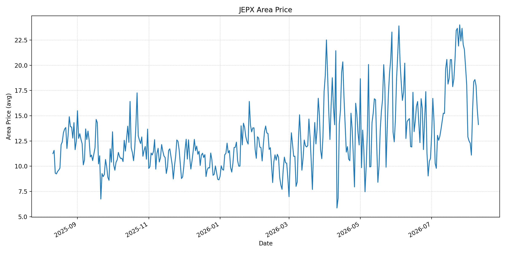
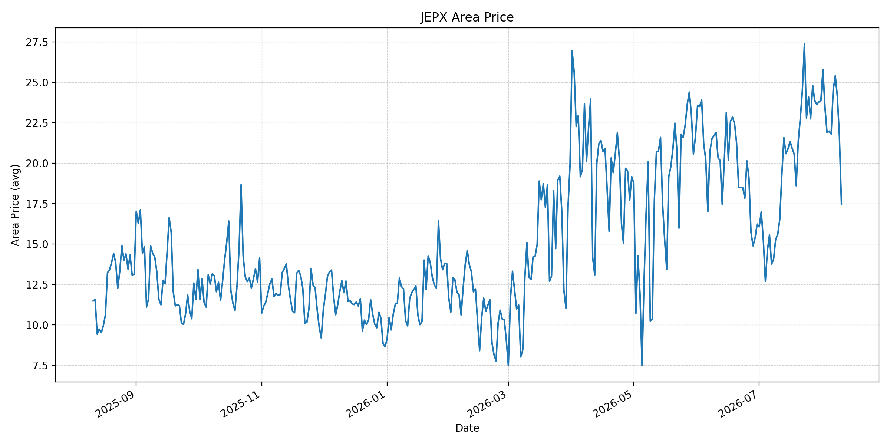
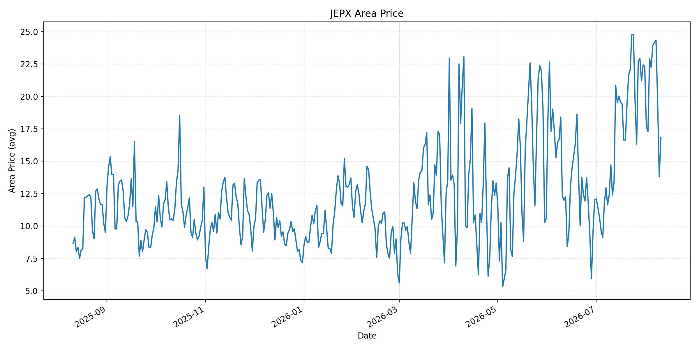
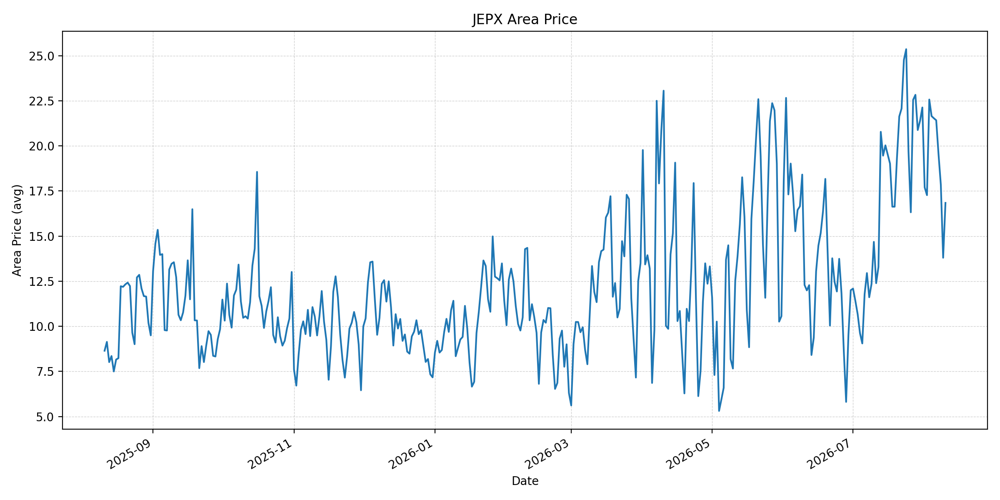
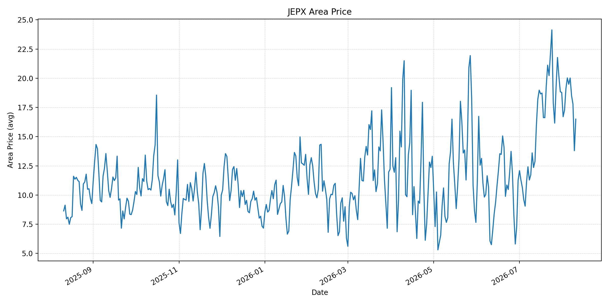
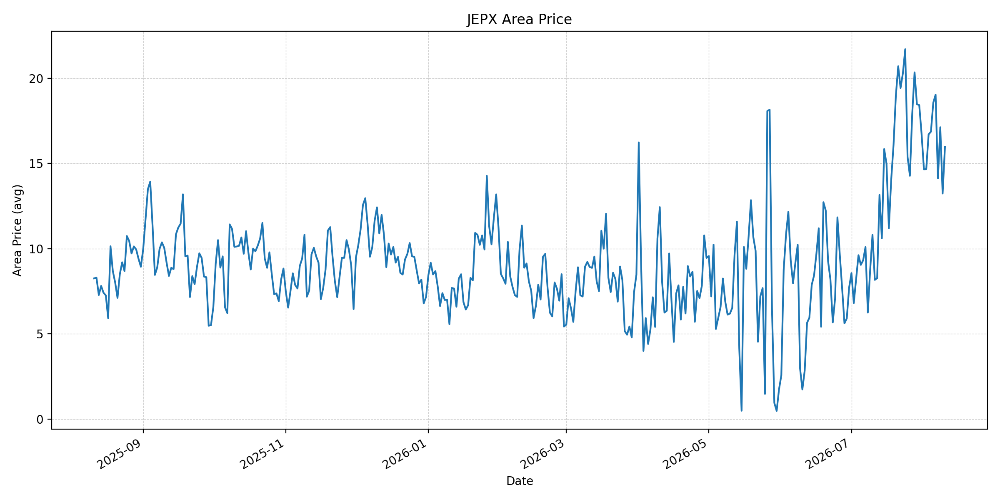
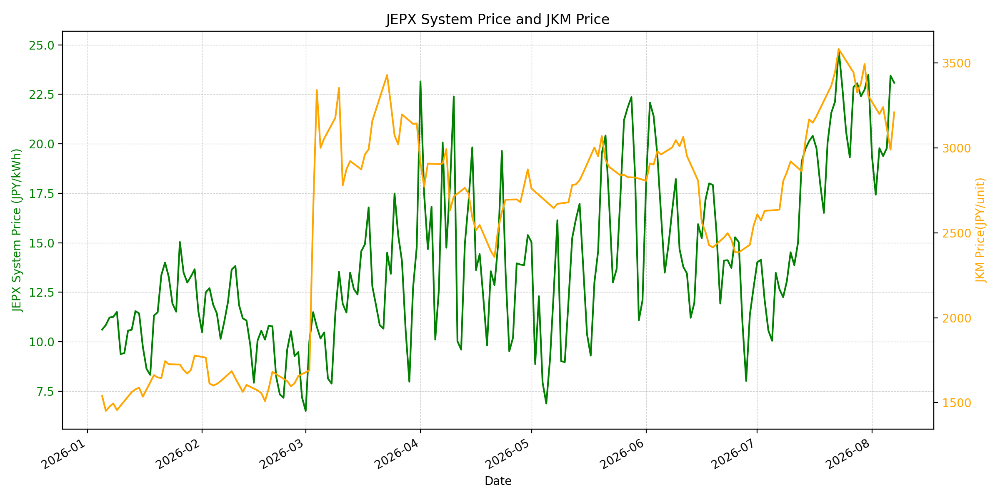

長期トレンド
JKMとJEPXシステムプライスの推移グラフ

WTIの推移グラフ

JEPXエリアプライスグラフ（直近一年分）









短期トレンド
JKMとJEPXシステムプライスの推移グラフ

WTIの推移グラフ

JEPXシステムプライス
JEPXは受渡日ベースの最新非空値で評価しています。最新値は 2026-08-10 分です。先週終値は 2026-08-03 時点の直近値、先月終値は 2026-07-31 時点の直近値で評価しています。
| エリア | 当日価格 | 前日価格 | 前日比（％） | 先週終値 | 先週比（％） | 先月終値 | 先月比（％） | 過去最高値 | 最高値比（％） |
|---|---|---|---|---|---|---|---|---|---|
| システム | 15.88 | 16.93 | -6.20 | 19.78 | -19.72 | 23.48 | -32.37 | 64.06 | -75.21 |
| 北海道 | 11.79 | 13.58 | -13.18 | 9.75 | 20.92 | 14.86 | -20.66 | 73.92 | -84.05 |
| 東北 | 14.13 | 15.68 | -9.89 | 12.28 | 15.07 | 18.04 | -21.67 | 84.92 | -83.36 |
| 東京 | 17.45 | 21.66 | -19.44 | 21.87 | -20.21 | 23.85 | -26.83 | 86.13 | -79.74 |
| 中部 | 17.17 | 19.08 | -10.01 | 23.66 | -27.43 | 23.83 | -27.95 | 52.06 | -67.02 |
| 北陸 | 16.84 | 13.80 | 22.03 | 22.91 | -26.49 | 22.32 | -24.55 | 46.48 | -63.77 |
| 関西 | 16.84 | 13.80 | 22.03 | 22.57 | -25.39 | 22.13 | -23.90 | 46.48 | -63.77 |
| 中国 | 16.50 | 13.80 | 19.57 | 19.12 | -13.70 | 18.78 | -12.14 | 46.48 | -64.50 |
| 四国 | 15.97 | 13.24 | 20.62 | 16.71 | -4.43 | 16.74 | -4.60 | 46.48 | -65.64 |
| 九州 | 15.06 | 12.70 | 18.58 | 17.04 | -11.62 | 17.46 | -13.75 | 40.54 | -62.85 |
LNG先物価格
最新値は 2026-08-07 の LNG(close) です。前日価格は直近非空値の 2026-08-06、先週終値と先月終値は 2026-07-31 時点の直近値で評価しています。
| 当日価格 | 前日価格 | 前日比（％） | 先週終値 | 先週比（％） | 先月終値 | 先月比（％） | 過去最高値 | 最高値比（％） |
|---|---|---|---|---|---|---|---|---|
| 3210.00 | 2990.00 | 7.36 | 3307.00 | -2.93 | 3307.00 | -2.93 | 10319.00 | -68.89 |
石油先物価格
最新値は 2026-08-07 の OIL(close) です。前日価格は直近非空値の 2026-08-06、先週終値と先月終値は 2026-07-31 時点の直近値で評価しています。
| 当日価格 | 前日価格 | 前日比（％） | 先週終値 | 先週比（％） | 先月終値 | 先月比（％） | 過去最高値 | 最高値比（％） |
|---|---|---|---|---|---|---|---|---|
| 78.18 | 77.29 | 1.15 | 84.67 | -7.67 | 84.67 | -7.67 | 123.70 | -36.80 |
ニュース
イラン情勢に関するニュース
- 8月11日、イラン外相はドイツ外相との電話会談で、ホルムズ海峡の安全確保には米国の「攻撃的行動」と港湾封鎖の終了が必要だと主張しました。ドイツ側は無条件で自由かつ安全な航行を求めており、再開条件を巡る隔たりは残っています。参照: AP, 2026-08-11
- 米軍はイラン港湾の封鎖を回避しようとした船舶に発砲して航行不能にしたと発表しました。イランはホルムズ海峡での船舶攻撃と再開条件を維持しており、軍事的な対峙が航路の正常化を遅らせる要因となっています。参照: AP, 2026-08-11
ホルムズ海峡経由の石油・LNGに関するニュース
- 米エネルギー長官は8月11日、ホルムズ海峡を通過する原油が日量約900万バレル、パイプライン分を含む地域からの流出が日量約1,500万バレルに達していると説明しました。供給圧力の緩和を示す材料ですが、実際の通航量と継続性には留意が必要です。参照: AP, 2026-08-11
- 同時に、イランは海峡の再開には米国側の条件履行が必要との立場を堅持しています。APによると、原油先物は戦前水準を上回って推移しており、通航量の回復だけではリスクプレミアムを解消し切れていません。参照: AP, 2026-08-11
ホルムズ海峡経由でない石油・LNGに関するニュース
- 8月11日、イエメン当局は、バブエルマンデブ海峡でフーシ派のミサイル攻撃を受けた商船で6人が死亡したと発表しました。紅海・バブエルマンデブはサウジ原油の代替輸送ルートですが、船舶攻撃が続くことで代替の実効性が低下しています。参照: AP, 2026-08-11
- フーシ派はモカ港など政府支配地域への攻撃も継続しています。紅海ルートでの安全悪化は、ホルムズ通航量が増えても船腹、保険料、到着日数の上振れ要因として残ります。参照: AP, 2026-08-11
日本国内のイラン戦争に関係するニュース
- 過去24時間で、JEPX制度、国内電力需給ルール、または日本政府のイラン戦争関連対策を直接変更する主要な新規公表は確認できませんでした。
- JOGMECは8月10日更新で、8月3日から7日のJKMは低21ドル台でおおむね横ばいながら、ホルムズの船舶航行リスクで7日にリスクプレミアムが再拡大したと整理しています。電力用LNG在庫は8月2日時点で200万トンです。参照: JOGMEC, 2026-08-10更新
インサイト
ニュース事項による日本の電力市場への影響（短期：数日〜1週間）
- JEPXシステムプライスは最新の8月10日で 15.88 円/kWh、前日比 -6.20%、先週比 -19.72% です。東京 17.45 円/kWhと中部 17.17 円/kWhも下落しており、現時点では電力需給の緩みが市場に表れています。
- LNGは8月7日で 3210.00、前回比 7.36%、WTIは 78.18 ドルで 1.15% 上昇しました。ホルムズの原油通過量増加は下押し材料ですが、海峡再開条件と紅海の船舶攻撃が続くため、燃料価格の短期的な変動は大きくなり得ます。
- 北陸・関西は前日比 22.03%、中国 19.57%、四国 20.62%、九州 18.58% と上昇しており、燃料ニュースが落ち着いても地域間の需給差は残ります。数日から1週間では航行安全の具体的な改善を確認するまでは、上振れリスクを織り込む局面が続くとみられます。
ニュース事項による日本の電力市場への影響（長期：1ヶ月〜半年）
- JEPXシステムは先月比 -32.37%、LNGは -2.93%、WTIは -7.67% です。ホルムズの通航量が持続的に回復すれば火力限界費用の低下要因になりますが、再開の政治条件と紅海の代替ルート不安定化が解消されなければ、燃料プレミアムは残ります。
- JOGMECが示す電力用LNG在庫200万トンは足元の需給緩衝材ですが、輸送の不確実性が長引く場合、再調達コストは秋冬に向けて遅れて波及します。JEPXの地域別価格は先月比で北海道 -20.66%、東京 -26.83%、中部 -27.95% と下落しており、燃料費低下の反映余地は地域需給で異なります。
- 過去最高値比ではシステム -75.21%、LNG -68.89%、WTI -36.80% です。1ヶ月から半年は、ホルムズの実通航量、紅海航路の安全、国内在庫の補充ペースを分けて追うことが重要です。